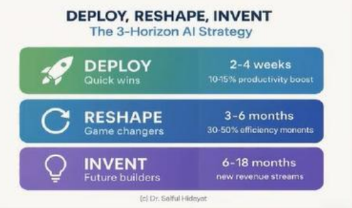

Trend Korea 202701 / 14
2027 Consumer Trend
트렌드 코리아
2027 한눈에
무리에서 먼저 뛰어나오는 양,
ALPHA SHEEP의 10가지 키워드
Intro02 / 14
The Big Shift
2027 키워드엔
'AI'가 없다
2026년 1번 키워드는 AI였지만, 1년 만에 AI는 전기·스마트폰처럼 당연한 범용재가 됐어요. 그래서 이제는 AI 때문에 달라진 우리의 모습을 봅니다.
범용재가 된 AI → 4가지 변화
02개인의 변화
라이프 ROI · 저장인류 · 하프시그널
03조직의 변화
바이브 워킹 · 폼팩터 시프트 · 리:텐션 전략
Alpha Sheep03 / 14
10 Keywords
중간이 없는 격변의 시대,
이끌 것인가, 뒤처질 것인가
A권태사회넘치는 자극 속 무료함
L라이프 ROI삶의 모든 선택을 수익률로
P폼팩터 시프트기능은 그대로, 형태를 바꾸다
H해봄경제완벽보다 완료, 일단 해본다
A저장인류일단 저장하고 나중에 고른다
S바이브 워킹사람과 AI가 한 팀처럼
H리:텐션 전략붙잡기보다 돌아올 이유를
E휴먼엣지결과보다 사람의 흔적
E하프시그널갱년기는 후반전의 신호
P안목자본좋은 것을 알아보는 눈
Keyword 0104 / 14
01사회적 변화
권태사회
Age of Ennui Society
할 일이 없어서가 아니라, 과도한 자극에 지쳐 무료함을 느끼는 사회.
1"더 나은 게 있을 텐데 왜 이걸 하고 있지?"
얼태기·골태기·런태기 — 근본 해결 대신 새 물건으로 권태를 달랜다
2한국 직장인 몰입도 13.8%
140개국 중 105위. 3M 15% 룰, 코니카미놀타 사내 부업 제도
For Beauty
고객은 뷰티 제품 자체에 권태롭다. 기다려지는 자극을 설계할 것.
Keyword 0205 / 14
02개인적 변화
라이프 ROI
Life ROI
인생·일·관계의 모든 국면에서 투자 대비 수익을 따지고, 아니면 손절.
 AI 데이팅 앱 볼라
AI 데이팅 앱 볼라1하루 10명 로테이션 소개팅
꾸미고 나간 김에 산출을 최대로
2AI 아바타끼리 먼저 연애해보는 앱
맞는다는 결과가 나와야 실제로 만난다
For Beauty
"써보면 압니다"는 안 통한다. 첫 경험에서 ROI를 느끼게 하는 두괄식 상품기획.
Keyword 0306 / 14
03조직 차원 변화
폼팩터 시프트
Plasticity in the Form Factor Shift
핵심 기능은 그대로, 형태·물성·사용 행동을 바꿔 새 시장을 만든다.
 젤리 틴트
젤리 틴트1기능 혁신이 한계에 오면 형태가 바뀐다
카시오 반지시계, 붙이는 영양제
2뷰티·식품이 가장 활발한 영역
젤리 틴트, 휘핑크림 같은 선크림
For Beauty
모양만 바꾸면 실패. "왜 이 형태인가"가 제품의 장점을 말해야 한다.
Keyword 0407 / 14
04우리의 대응
해봄경제
'Have-a-Go' Economy
완벽하게 준비하기보다 일단 해보고, 배우고, 고쳐 나가는 경제.
 대학생이 만든 그늘 찾는 앱
대학생이 만든 그늘 찾는 앱1폭염에 지친 대학생의 "그늘로" 앱
그늘로만 걷는 길 안내 — 직접 만들어 해결
2BYD, 한국에서 일본 브랜드 합계 추월
"일단 출시 후 개선"이 이 시대에 맞는 속도
For Beauty
계획 → 실행이 아니라 실행 → 실행 → 최적화. Done is better than perfect.
Keyword 0508 / 14
05개인적 변화
저장인류
All is Saved : Homo Archivarius
고른 뒤 저장하지 않고, 일단 저장한 뒤 고르는 사람들.
 음료 기록 앱 Brewwww
음료 기록 앱 Brewwww11TB면 고화질 사진 20년 치
저장은 싸고, 검색은 쉬워졌다
2피부 진단서를 모아 AI에게 묻는 소비자
실장님 추천은 "상술", AI 추천은 "나를 위한 것"
For Beauty
"데이터 다 꺼내봐"로는 아무것도 안 나온다. 목표를 먼저 정하고 쌓을 것.
Keyword 0609 / 14
06조직 차원 변화
바이브 워킹
Seamless AI Integration : Vibe Working
사람과 AI가 한 팀처럼 맥락을 공유하며 일하도록 업무를 재설계.

BCG · AI 도입 3단계1보고서는 2일 → 반나절, 프로젝트는 3개월 그대로
병목은 조직이 만든다
2상담 연결 47초 → 5초
사람이 받고, AI가 요약·해결안 3개 제시
For Beauty
경진대회 대신 실패 사례를 모아라. 개인의 요령이 조직의 자산이 된다.
Keyword 0710 / 14
07조직 차원 변화
리:텐션 전략
Hold on to Your Customers!
경쟁의 중심이 고객 획득에서 고객 유지로. Lock-in에서 Stay-in으로.
1신규 가입 쿠폰, 5천 원엔 안 오고 2만 원엔 온다
그리고 2만 원만 쓰고 탈퇴
2역체감 · 환대 · 메모리 · 혜택
리츠칼튼은 잃어버린 인형의 "호텔 휴가" 사진을 보냈다
For Beauty
떠나봐야 아는 가치, 역체감을 키워라. 다시 돌아올 이유를 만드는 것.
Keyword 0811 / 14
08우리의 대응
휴먼엣지
Every AI Needs the Human Edge
AI가 결과를 쉽게 만드는 시대, 사람의 경험·손길·시간이 차별화가 된다.
 AI 모네 실험
AI 모네 실험 가죽의 파티나
가죽의 파티나1AI 모네 실험
AI 그림이라 하면 혹평, 원본이라 밝히자 찬사로 반전
2"예쁘게" 대신 "제 매력 포인트로"
평균을 넘는 결정은 사람만 할 수 있다
For Beauty
고생한 과정을 보여줘라. 결점·과정·손길·시간이 프리미엄이 된다.
Keyword 0912 / 14
09개인적 변화
하프시그널
Embracing Menopause : The 'Half Signal'
갱년기를 끝이 아닌 인생 후반전을 알리는 신호로 다시 읽는 흐름.
 『사춘기 대 갱년기』
『사춘기 대 갱년기』 갱년기 진단 키트
갱년기 진단 키트1X세대는 참지 않는다
말하고, 소비하고, 필요한 상품을 요구한다
2호르몬+미용 패키지 약 1,000만 원
갱년기 보험, 진단 키트까지 — 하나의 시장으로
For Beauty
갱년기는 상품기획의 중요한 생애 구간. 4050 고객이 가장 큰손이다.
Keyword 1013 / 14
10우리의 대응
안목자본
Power of Taste Capital
발굴안·심미안·감식안, 좋은 것을 알아보는 눈이 AI 시대 핵심 경쟁력.
 이솝 매장
이솝 매장 클리닉 인테리어
클리닉 인테리어1AI를 써도 글을 못 쓰는 이유
좋은 글이 뭔지 모르기 때문
220대가 피부과를 고르는 3순위 "미감"
대기실 인테리어와 꽃병의 꽃을 본다
For Beauty
한국인이 가장 좋아하는 칭찬은 "안목 있다". 고객의 안목을 인정하라.
Closing14 / 14
Last Message
"어제의 해결책이
오늘의 문제점이다."
과거의 성공 공식을 흘려보내는 용기.
Q110년 넘은 브랜드가 올드해지지 않으려면?
프링글스는 새 맛을 낼 때마다 오리지널이 더 팔린다. 변주를 두려워하지 말 것.
Q2K-뷰티가 다시 뜬 이유는?
한류가 아니라 제품 그 자체, 특히 속도. 인디 브랜드는 3개월마다 신제품.
여러분은 어떤 키워드가 와닿았나요?